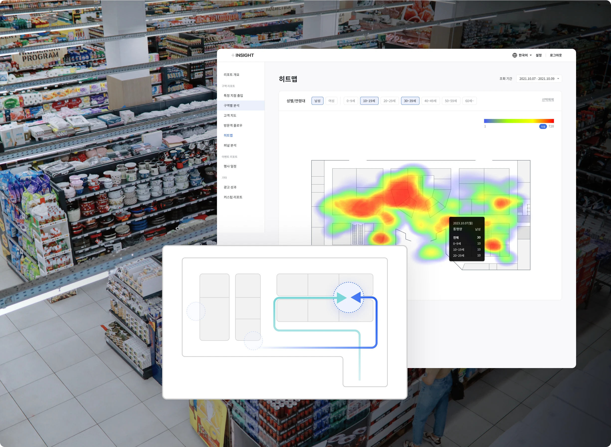
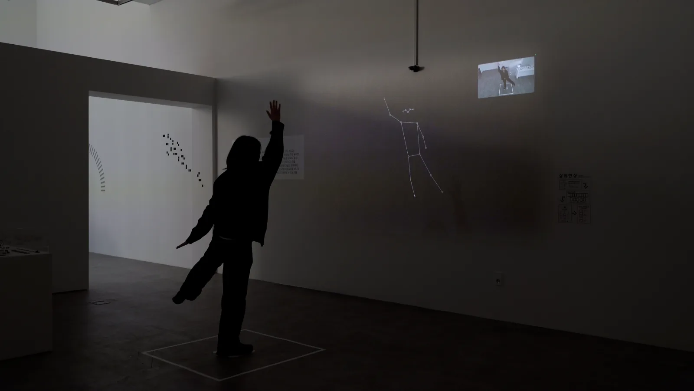
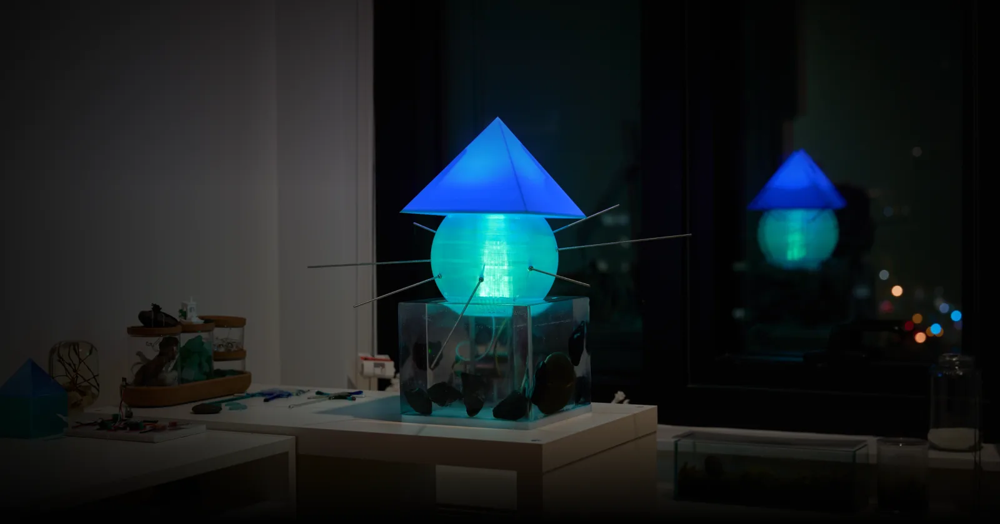
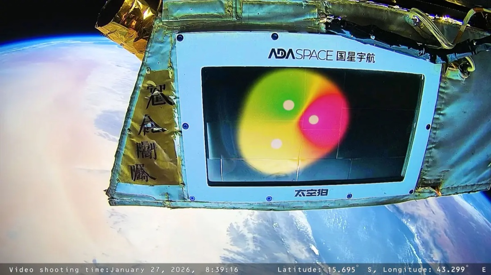

Full-stack · Data Platform
웹 제품부터 데이터 수집·분석, 배치 처리, 관측, 다고객 운영까지 전체 경로를 설계하고 구현합니다.
Python · TypeScript · React · Next.js · ClickHouse · Kafka · Airflow
SOFTWARE SYSTEMS · 2010 — NOW
백엔드·데이터 플랫폼·웹 애플리케이션부터 실시간 시스템까지,
구조 설계·구현·배포·운영을 책임집니다.
BASED IN SEOUL · WORKING ACROSS SOFTWARE & INTERACTIVE SYSTEMS
SCROLL TO EXPLORE소프트웨어 연구 · 프리랜서 · 실무
전문 엔지니어링 경력
공개 가능한 대표 시스템 사례
일관된 원칙 — 변화와 공통 구조의 분리
APPROACH
HOW I WORK
기술을 출발점으로 삼지 않습니다. 문제의 목적과 제약을 먼저 이해하고, 반복되는 규칙과 독립적으로 변화해야 하는 요소를 분리합니다.
그 경계에서 구성요소의 책임과 기술 선택의 이유가 드러납니다. 새로운 요구가 생겨도 전체를 다시 만들기보다 필요한 부분을 확장하거나 교체할 수 있습니다.
SELECTED WORK
각 사례를 선택하면 문제, 핵심 판단, 구현 범위와 공개 가능한 결과를 볼 수 있습니다.

01 / DATA PLATFORM PlusInsight
02 / RETRIEVAL SYSTEMS Samramansang
03 / INTERACTIVE SYSTEMS Lumenar Series
04 / REAL-TIME GRAPHICS Orbital CellsCAPABILITY
END-TO-END SYSTEMS
웹 제품부터 데이터 수집·분석, 배치 처리, 관측, 다고객 운영까지 전체 경로를 설계하고 구현합니다.
Python · TypeScript · React · Next.js · ClickHouse · Kafka · Airflow
비전·음성·언어 입력을 해석해, 검색과 실제 사용자 경험으로 연결합니다.
PyTorch · FAISS · YOLO · STT · LLM
시간 기반 규칙을 다양한 실행 환경에서 일관되게 재현하는 런타임을 만듭니다.
C++ · OpenGL · WebGL · Unity · GLSL
센서와 장치의 불확실성을 다루고, 조명·로봇·디스플레이를 소프트웨어와 연결합니다.
Arduino · ESP32 · Raspberry Pi · Jetson
CAREER PATH
2023 — NOW
실시간 상호작용·그래픽·풀스택 앱·물리 컴퓨팅을 전시와 제품을 위한 시스템으로 통합.
2019 — 2023
AI 데이터 플랫폼과 온프레미스 행동 분석 시스템을 구축하고, 데이터 파이프라인과 엔지니어링 조직을 리드.
2017.09 — 2019.02
Python 데이터 파이프라인과 웹 개발.
2017.01 — 2017.08
C# 게임 서버 엔진 개발.
2015.12 — 2016.12
C++ 게임 서버 개발.
2014.04 — 2015.10
Java 프레임워크 개발.
2012.10 — 2014.04
3D 스캐닝·프린터 소프트웨어 개발.
2010 — 2012
Movement Research Lab에서 그래픽·움직임을 연구.
2010 — 2012
웹·Android 프로젝트를 수행.
2006 — 2010
컴퓨터공학부 우등 졸업.